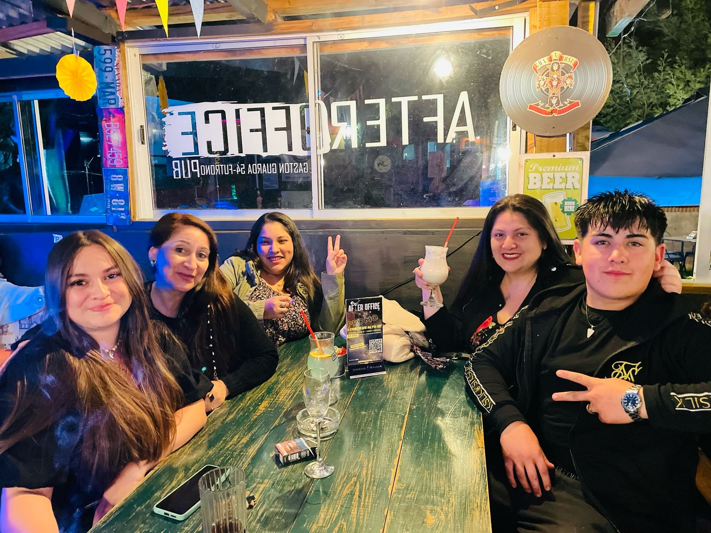

El after office que se quedó
After Office nació con una idea simple: un espacio donde terminar el día con buena música, tragos de autor y comida para compartir. Lo que empezó como un rincón nocturno en Futrono se convirtió en el referente de la zona sur de Los Ríos.